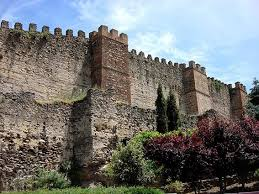

Un viaggio nella storia della capitale spagnola
Da antico insediamento moresco a moderna metropoli europea: scopri come Madrid è diventata una delle capitali più importanti del continente.
Origini e Madrid araba
Le prime testimonianze significative risalgono al IX secolo, quando l’emiro Muḥammad I di Cordova fece costruire una fortezza chiamata Mayrit, il “luogo delle acque”. Questo insediamento moresco era strategico, situato su un’altura lungo il fiume Manzanarre, e favorì lo sviluppo di piccole comunità agricole e mercantili. Le mura, le torri di guardia e i resti di antiche porte testimoniano ancora oggi la presenza araba in città.
Dal Medioevo alla corte reale
Dopo la Reconquista del 1085, Madrid passò sotto il controllo cristiano. La sua posizione centrale nella penisola iberica ne fece un luogo di importanza strategica. Nel 1561, il re Filippo II trasferì la corte reale a Madrid, trasformandola definitivamente in capitale del regno. Durante questo periodo furono costruiti palazzi, piazze e chiese che segnarono la nascita di un nucleo urbano moderno, tra cui la famosa Plaza Mayor.
Madrid moderna
Tra XIX e XX secolo, Madrid attraversò una fase di forte espansione urbana: nacque la Gran Vía, cuore commerciale e architettonico della città. L’arrivo delle ferrovie, nuovi quartieri residenziali e l’urbanizzazione rapida ne cambiarono il volto. Dopo la dittatura franchista, la città si trasformò in centro culturale e artistico, con la celebre Movida Madrileña, che portò innovazione, musica, cinema e arte, facendo di Madrid un simbolo della modernità spagnola.

Luoghi storici principali
Madrid ospita numerosi siti storici, tra cui il Palacio Real, la Cattedrale dell’Almudena e le antiche piazze. La città mescola architettura medievale, rinascimentale e moderna, offrendo un percorso culturale completo ai visitatori.